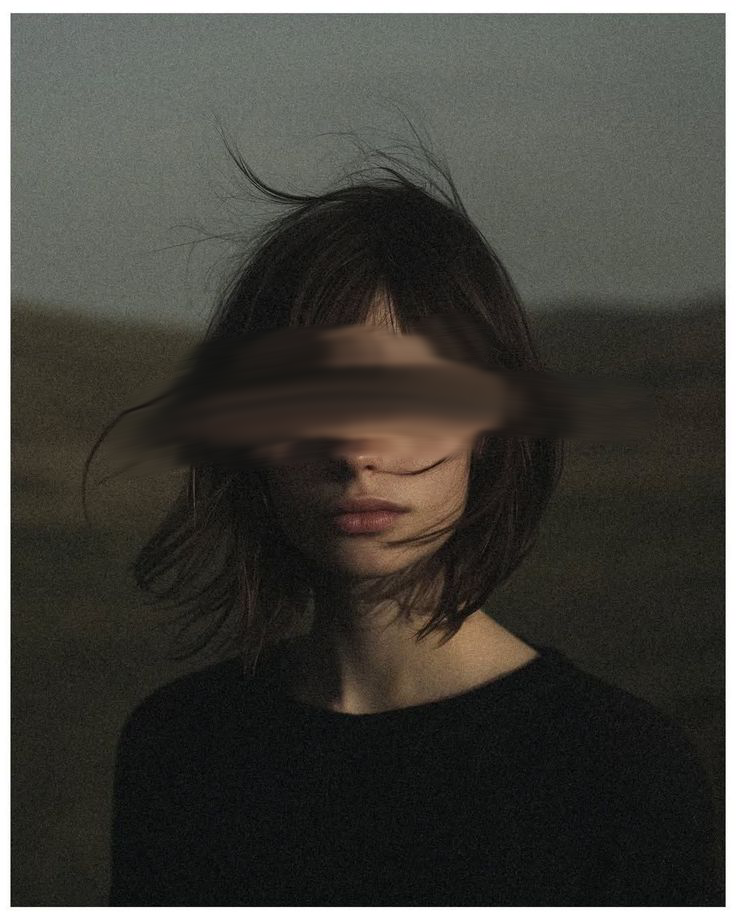
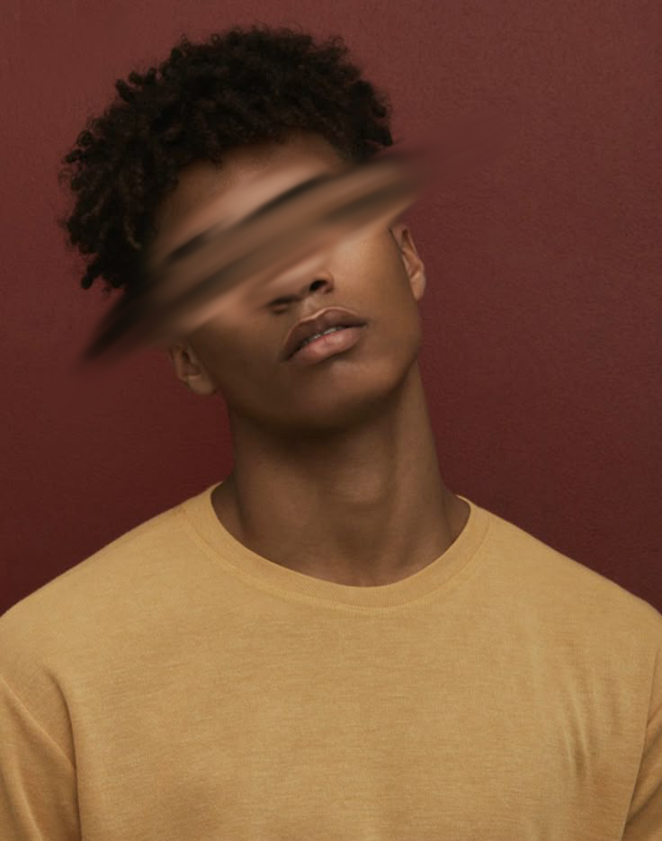

Clara
- Idade: 18
- Habilidade: Regeneração
- Estado Mental: Competente
- Organização: BDF
Uma jovem marcada pelo abismo, dividida entre proteger e destruir.
"Entre o bem e o mal, prefiro completar minha missão."

Matheus
- Idade: 17
- Habilidade: Chamas
- Estado Mental: Instável
- Organização: BDF
Apenas um garoto forçado a viver uma vida agoniante desde o nascimento.
"O abismo é apenas um espelho dos meus próprios traumas."

Luana
- Idade: 17
- Habilidade: incentivo e leitura mental
- Estado Mental: facilmente social
- Organização: BDF
Alguem capaz de perceber quando ha maldade no ar,mas não se engane. ela não é tão santa.
"Em um mundo cheio de dor e perdas, eu escolhi seguir em frente."